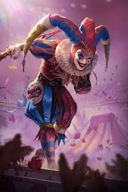

Présentation
Is4gi et BfTigra
Nous allons présenter ici la Famille dirigeante de Px! Passons nos 3 dirigeants d'exceptions et passons aux autres: Les seigneurs de guerre Is4gi et BfTigra. Deux hommes au sang chaud "Si un ennemi vient, nous remplirons un verre de son sang. Si deux ennemis viennent, nous remplirons une bassine de leur sang. Si trois ennemis viennent, alors la mer virera au rouge "


Azepasoif, Papillon et Alexxa
Nos préposés aux évènements. Ils sont nos piliers pour tous les évènements dans l'alliance. La douce Papillon et son garde du corps Azepasoif, les plus mystérieux des officiers (on ne sait jamais sur qui on tombe quand ils arrivent dans le discord, même si c'est souvent deux pour le prix d'un). Ils apportent une petite touche joviale et lumineuse au milieu de cet océan de noirceur et de tristesse.
Alexxa, que dire de plus que 'Attention à vos yeux !' Femme élégante et ... attend me frappe pas je réfléchi à ce que je peux mettre... Non pas les yeux, PAS LES YEUX ahaaaaaaaaaaaaaaaaaaaaa!

Scribius
Le bouffon du Roi dans l'alliance. Pas grand chose à dire à part qu'il est gentil (argument souvent donné par les filles quand on leur demande ce qu'elles pensent de lui). Il ne faut pas le sous-estimer ni le nourrir après minuit sinon attention à vous
